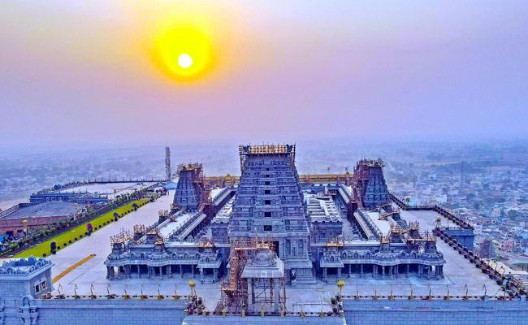

welcome to my temple blog! Hi this is haryanth currently pursuing b.tech in AIML.Come and join in my journey of exploring historic temples in my city.This blog will show case my adventures and photography i hope you will like this blog.
I recently visited this marvelous manmade structure on earth.lets see the image of the temple given below

This is one of the most ancient temples in telangana
situated on top of the mountain
Lord lakshmi narayana resides here
Which is 65 km from hyderabad city
most ancient and powerful Temple
Here is the glimpse video of the temple
This is the whole information of the temple and my experience which i had recently hope u liked this
Blog2:-
Trip to swarnagiri temple
This is my another experience which i had this is the temple which is situated near to yadadri temple this is bit connected to previous one
Swarnagiri temple is recently built in the state of Telangana
Swarnagiri is situated 65km from Hyderabad
This is now one of the most visited places in Telangana State
This is the place where lord venkateshwara swami is worshiped
ABOUT ME
Hi there! This is Haryanth From hyderabad currently pursuing my bachelor of technology in cse(ai&ml).
I created this blog to show case my intrest in exploring places hope you all like this blog. This blog helps you to know about the places and makes you to motivate you to explore such things